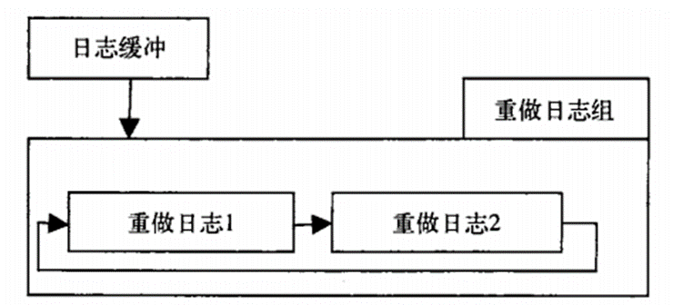

Index
- DNS基本概念
- Master: 正向区/反向区
- Slave: 正向区/反向区
- DNS区域传输限制
- 根提示区、Forward
- Client使用DNS解析
- 扩展： 子域授权
- 扩展： DNS Round Robin
- Puppet简介
- Puppet部署
- 实例：File资源
- 实例：创建模块test1
- 实例：创建模块httpd
- Puppet命名规范
- Puppet资源
- 资源的依赖关系
- notify subscribe
- Puppet部署Nginx
- Puppet部署MySQL
- Master自动签发证书
- Puppet Dashboard
- Puppet Git
- Puppet Cobbler
MySQL事务与隔离级别
事务都应该具备ACID特征所谓ACID是Atomic(原子性)，Consistent(一致性)，Isolated(隔离性)，Durable(持续性)四个词的首字母缩写
MyISAM：不支持事务，用于只读程序提高性能
InnoDB：支持ACID事务、行级锁、并发
Berkeley DB：支持事务
事务特性：
原子性：组成事务处理的语句形成了一个逻辑单元，不能只执行其中的一部分。换句话说，事务是不可分割的最小单元。
一致性：在事务处理执行前后，数据库是一致的。也就是说，事务应该正确的转换系统状态。
隔离性：一个事务处理对另一个事务处理没有影响。就是说任何事务都不可能看到一个处在不完整状态下的事务。
持续性：事务处理的效果能够被永久保存下来。反过来说，事务应当能够承受所有的失败，包括服务器、进程、通信以及媒体失败等等。
比如：银行转帐过程中，必须同时从一个帐户减去转帐金额，并加到另一个帐户中，整个过程不能再拆分。
比如：银行转帐过程中，要么转帐金额从一个帐户转入另一个帐户，要么两个帐户都不变，没有其他的情况。整个过程双方必须一致
比如，银行转帐过程中，在转帐事务没有提交之前，另一个转帐事务只能处于等待状态。
比如：银行转帐过程中，转帐后帐户的状态要能被保存下来。
Innodb引擎中的事务日志
InnoDB引擎中事务日志通过重做(redu)和日志缓冲(InnoDB Log Buffer)实现。
事务开始时：记录该事务一个LSN(log sequence number)；
事务执行时：往InnoDB Log Buffer重插入事务日志；
事务提交时：将InnoDB Log Buffer中的日志刷新到磁盘上(默认的实现，变量innodb_flush_log_at_trx_commit=1)。也就是在写数据前先写日志，这种方式成为预写日志方式，通过这样来保证事务的完整性。(show variables like '%commit%';)
Log buffer中的日志向硬盘上刷新的条件
在主线程不论事务是否提交，每秒就会将重做日志缓冲写入磁盘的重做日志文件中。
另一个触发刷新过程是由参数innodb_flush_log_at_trx_commit 控制。它表示在提交时，处理重做日志的方式：–它的值可以有0、1、2；0代表当提交事务时，并不将事务的重做日志写入磁盘上的日志文件，而是等待主线程每秒的刷新；而1和2不同的地方在于：1是在commit时将重做日志缓冲同步写到磁盘；2是重做日志异步写到磁盘，即不能完全保证commit时肯定会写入重做日志文件，只是有这个动作。它仅仅调用了操作系统文件系统的写入，由于文件系统的缓存机制，所以也不能保证即刻写入磁盘。
值得注意的一点：因为重做日志有个capacity变量，该值代表了最后的检查点不能超过这个阀值。
事务日志增加了整体IO量，但是相对于保证数据的安全是值得的，而且日志的记录经过了精心安排，做到了最省：
磁盘操作最耗时间的就是磁头的寻址，连续写入的好处是相比如随机写入，磁头寻址动作耗费少；
而事务日志的创建之初申请的是连续的物理空间，而且每次事务都是一个递增的日志序列号，每次写入都是紧接着前面的一次写入，基本上是一个顺序的写入过程。
事务日志文件
ib_logfile0和ib_logfile1–这两个文件就是重做日志文件，或者事务日志，mysql默认文件
作用：防止实例或者介质失败
每个InnoDB存储引擎至少有一个重做日志文件组，每个文件组下至少有2个重做日志文件，如默认的ib_logfile0、ib_logfile1。InnoDB存储引擎先写重做日志文件1，当达到文件的最后时，会切换至重做日志文件2，当重做日志文件2也被写满时，会再被切换到重做日志文件1中。
影响重做日志的参数：Innodb_log_file_size、innodb_log_files_in_group 、 innodb_log_group_home_dir等

显式事务
begin或 start transaction开始一个事务
rollback 事务回滚
commit 事务确认
隐式事务
mysql默认是自动提交的，即用户提交一个query，它就直接执行！
可以用set来改变mysql的自动提交模式
set autocommit=0 禁止自动提交
set autocommit=1 开启自动提交
注意使用 set autocommit=0 时，以后所有的SQL都将做为事务处理，直到用commit确认或rollback结束
use test;
CREATE TABLE dbtest(id int(4)) TYPE=INNODB;
select * from dbtest;
begin;
insert into dbtest value(5);
insert into dbtest value(6);
commit;
select * from dbtest; 表中有5、6两个值
begin;
insert into dbtest values(7);
rollback;
select * from dbtest; 表中没有7，只有5、6两个值
<?php
$handler=mysql_connect("localhost","root","");
mysql_select_db("task");
mysql_query("SET AUTOCOMMIT=0");//设置为不自动提交
mysql_query("BEGIN");//开始事务定义
if(!mysql_query("insert into trans (id) values('2')")){
mysql_query("ROOLBACK");//判断当执行失败时回滚
}
if(!mysql_query("insert into trans (id) values('4')")){
mysql_query("ROOLBACK");//判断执行失败回滚
}
mysql_query("COMMIT");//执行事务
mysql_close($handler);
?>
事务隔离级别
未提交读(Read Uncommitted)：允许脏读，也就是可能读取到其他会话中未提交事务修改的数据
提交读(Read Committed)：只能读取到已经提交的数据。Oracle等多数数据库默认都是该级别
可重复读(Repeated Read)：可重复读。在同一个事务内的查询都是事务开始时刻一致的，InnoDB默认级别。在SQL标准中，该隔离级别消除了不可重复读，但是还存在幻象读
串行读(Serializable)：完全串行化的读，每次读都需要获得表级共享锁，读写相互都会阻塞
show variables like ‘%isolation%’; 查看默认隔离级别
select @@tx_isolation;
这四种隔离级别采取不同的锁类型来实现，若读取的是同一个数据的话，就容易发生问题。如：
脏读(Drity Read)：某个事务已更新一份数据，另一个事务在此时读取了同一份数据，由于某些原因，前一个RollBack了操作，则后一个事务所读取的数据就会是不正确的。
不 可重复读(Non-repeatable read):一个事务对同一行数据重复读取两次但是却得到了不同结果。例如在两次读取中途有另外一个事务对该行数据进行了修改并提 交。
幻读(Phantom Read):事务在操作过程中进行两次查询，第二次查询结果包含了第一次查询中未出现的数据（这里并不要求两次查询SQL语句相同）这是因为在两次查询过程中有另外一个事务插入数据造成的。
InnoDB的可重复读隔离级别和其他数据库的可重复读是有区别的，不会造成幻象读(使用Next-key Lock算法)，达到了标准的Serializable隔离等级。
select @@tx_isolation; 查看当前会话隔离级别
select @@global.tx_isolation; 查看系统当前隔离级别
set session transaction isolation level Read Uncommitted;
set session transaction isolation level serializable;设置当前会话隔离级别 (该级别防止事务未提示前插入新数据)
set global transaction isolation level repeatable read; 设置系统当前隔离级别(该级别避免同一个事务中的多次查询结果不相同)